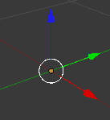
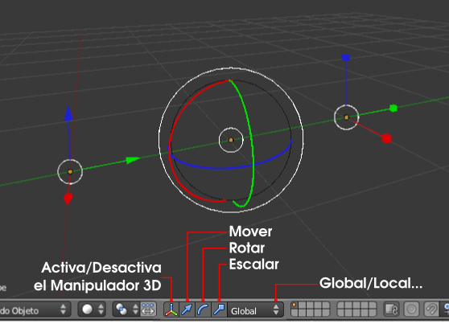

Manipulador 3D
Para una edición rápida de las tres transformaciones estudiadas, sobre todo Mover, y cuando éstas se hacen sobre todo respecto al sistema Global se utiliza mucho el Manipulador 3D, que es una ayuda visual con los tres colores que caracterizan a cada uno de los ejes:
- X: rojo
- Y: verde
- Z: azul
Por defecto sólo viene activado el de Mover representado por flechas.
Basta desplazarlo desde una de las flechas para que se ejecute la edición Mover. Una de sus grandes ventajas para optimizar el trabajo es que la edición termina cuando se suelta el Manipulador 3D.
Hay una opción más para el desplazamiento porque además de las flechas hay una circunferencia blanca. Si desplazamos agarrando ese elemento el objeto se moverá por un plano paralelo al del monitor. Equivale a hacer "G" y mover el ratón.
Desde la barra de menús del editor Vista 3D se activa/desactiva esta ayuda y se ofrecen varias opciones que la hacen más versátil.
